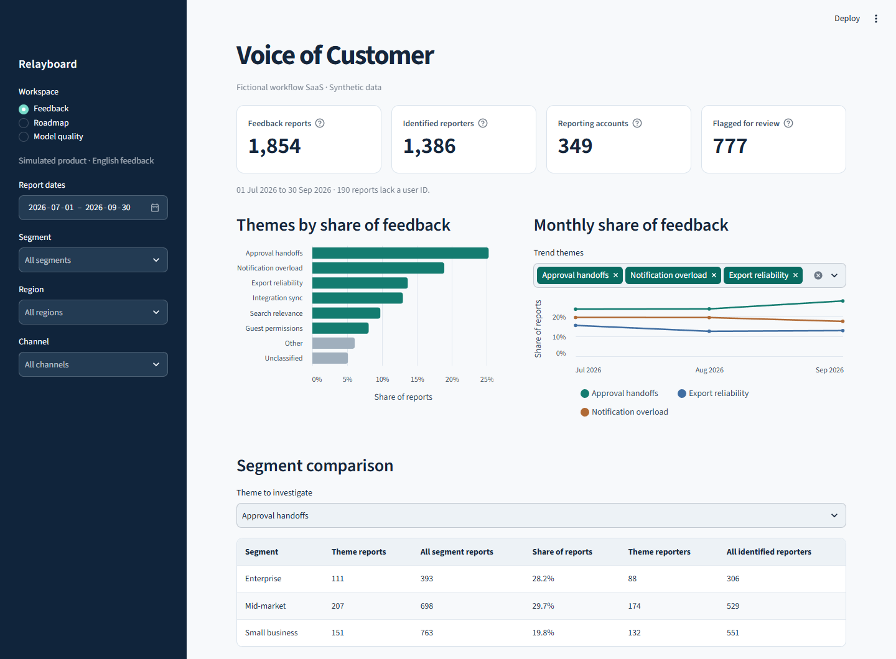

The decision
Relayboard’s workflow team can prototype one improvement. Approval handoffs led the decision quarter with 469 of 1,854 canonical reports. The proposal lets an authorized admin reassign a pending request when its approver loses access, while preserving the original request, policy and audit history.
From messages to evidence
The six-month pipeline consolidates 423 duplicates from 3,933 source events and retains the original evidence trail. Report share counts canonical reports. The reach estimate uses distinct identified reporters and adjusts for assumed eligibility. The quarter contains 190 reports without a known user ID.
| Theme | Reports | Share | Identified reporters |
|---|---|---|---|
| Approval handoffs | 469 | 25.3% | 394 |
| Notification overload | 351 | 18.9% | 292 |
| Export issues | 254 | 13.7% | 224 |
How the labels were checked
An English lexical taxonomy labels topic, sentiment and severity and flags uncertain or sensitive cases. On 24 hand-labeled examples it correctly classified 18 topics and routed two ambiguous examples to review. It abstained on four other topics. A Naive Bayes baseline was evaluated on the same small set. Possible permission exposure goes to incident review.
When the recommendation changes
RICE scores use estimates of reach, impact, confidence, and effort. Approval recovery leads the base scenario at 144.1 versus 35.0 for a notification digest. The stressed approval scenario falls to 19.9, below the digest’s base score. Validate eligibility with sampled cases, interviews and workflow events, then measure valid decisions within 24 hours in a pilot while monitoring authorization and audit integrity.
Limits of the evidence
The feedback, labels and planning inputs are synthetic. The generator deliberately raises the approval share over time. The results show how the prioritization workflow behaves and cannot establish market prevalence or adoption.
Dashboard preview


Enlarge dashboard